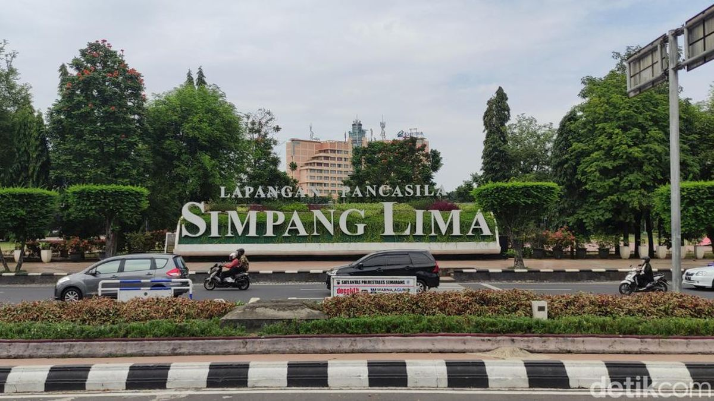

Simpang Lima
Simpang Lima adalah pusat kota Semarang yang terkenal dengan alun-alun luas dan berbagai fasilitas menarik.

Lawang Sewu
Salah satu bangunan bersejarah di Semarang yang terkenal dengan arsitektur kolonial dan cerita mistisnya.
Taman Bunga
Taman yang indah dengan berbagai macam bunga dan pemandangan alam yang menyegarkan di Semarang.